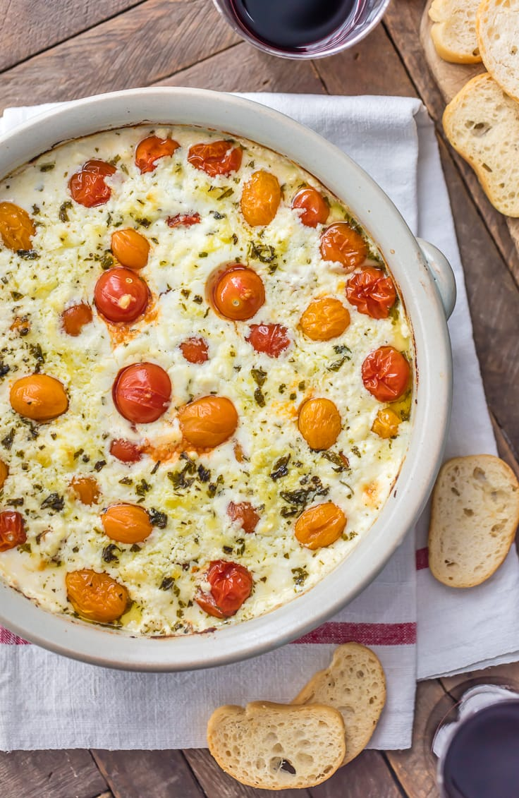

Tomato and Goat Cheese Dip
This is my variation on a goat cheese dip I found. I tinkered a little with the herbs and savories from the original.
This dip is excellent for parties, and has always been a huge hit. It's great on crosstini, pretzels, chips, and also goes great smeared in a sandwich.
Ingredients
- 12 oz chevre goat cheese log
- Cherry tomatoes
- Scallions, chopped, white bottoms separated from green tops
- 4-8 cloves of garlic
- 2 shallots, finely chopped
- Parsley, finely chopped
- Olive Oil
How it do
- Preheat oven to 420 degrees fahrenheit
- In a medium to large glass baking dish, place the goat cheese, whole tomatoes, shallots, white scallion bottoms, and whole garlic cloves
- Drizzle with olive oil
- Salt and pepper to taste
- Bake for 25 minutes or until garlic cloves and goat cheese are soft
- Remove from oven and let cool for 5-10 minutes
- With a wood spoon or potato masher, smash all the tomatoes and garlic cloves (be careful, they can be juicy and might squirt!)
- Add parsley and green scallion tops and mix with a spoon until consistent
- move to serving dish and sprinkle a little more parsley and green scallion on top for aesthetics
There you have one of the finest and relatively easiest dishes to make for your next gathering.
It pairs well with the salad dressing on this page in sandwiches, and is especially tasty with the crostini!
And remember to turn your oven off when you're finished.
Bon Appetit!
See Also
...